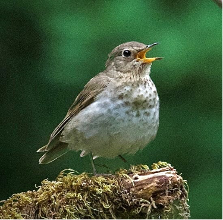

Zorzal de Swainson (Catharus ustulatus)

Zorzal de Swainson - Johnson, Tim 1
Description: Este zorzal de tamaño mediano pesa de 0,8 a 1,6 onzas y mide entre 6,5 y 7,5 pulgadas de largo. La especie de los estados del Pacífico es de color marrón oxidado con manchas en el pecho de color marrón claro y anillos oculares finos y pálidos. El macho y la hembra son similares, mientras que el plumaje juvenil se ve arriba y abajo.
Migration & Habitat: Sus zonas de verano se encuentran en bosques de coníferas. En el valle de Willamette viven en bosques mixtos y zonas ribereñas. Pasan el invierno en los bosques tropicales de Centroamérica.
Área de reproducción: Verde. Gama de invierno: Roja. Mapa de distribución del Informe sobre el estado de las aves de montaña: 2022. 2
Reproducción: Los machos establecen el territorio de reproducción y la hembra pone de 3 a 4 huevos en nidos de copa abiertos en matorrales de arbustos y árboles jóvenes. Ambos padres alimentan a los polluelos, que empluman entre 10 y 13 días después de la eclosión.
Dieta: Su dieta se compone principalmente de insectos y artrópodos, pero también de frutas y bayas silvestres. Recogen insectos de las hojas y los persiguen por el suelo del bosque.
Estado de conservación: Hay evidencia de disminución en Oregón, pero su especie está clasificada como “menor preocupación”. Con una corta temporada de reproducción, su mayor amenaza es la pérdida de hábitat. Durante la migración nocturna, sufren importantes colisiones con ventanas, torres y edificios altos.
Preparada por Vickie Stiteler
Créditos:
1Título: El tordo de Swainson Crédito: Johnson, Tim
Derechos: Permiso personal concedido.
2
Mapa de rango: Hill, J.M. 2022. The State of the Mountain Birds Report: 2022. Vermont Center for Ecostudies, White River Junction, VT.
Fuente: Consultado en septiembre17, 2023, de
https://mountainbirds.vtecostudies.org/birds/swainsons-thrush/
3Marshall, D.B., M.G. Hunter, and A.L. Contreras, Eds. 2003, 2006. Birds of Oregon: A General Reference.
Oregon State University Press, Corvallis, OR. 768 Pp.